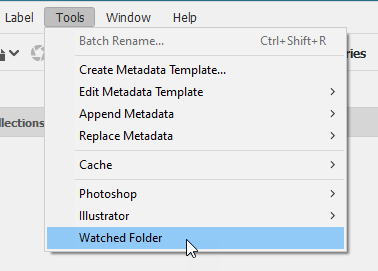
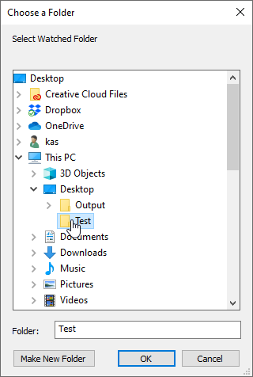

Watched folder
Script for Bridge written by Lumigraphics (an
Adobe Community Professional from InDesign scripting forum).
It´s an illustrative example of making a watched folder.
Here is what the author writes about the script:
I shoot product photos tethered with Canon Utility and review the captures in Bridge. Canon Utility has a linked software setting which calls an app after each capture. On the Mac, this feature switches focus to Bridge but on Windows 10, Canon Utility won't switch to Bridge automatically. I don't know if this is an Adobe or Canon bug.
Bridge unfortunately doesn't have a watched folder (sometimes called a hot folder) feature, so there is no built-in way to fix the problem.
I decided to write a watched folder script that can run arbitrary functions. This works perfectly and fixes the problem I'm having. It can be easily modified to do pretty much any processing that was needed and can be scripted.
Add the script below to Startup Scripts and run it to start the operation.
This could be modified to only work on a specific folder. When the menu item was selected, an choose folder dialog could allow hot folder selection and then the script could test to see if that was the active folder before processing.
Install the script and click Watched folder menu item in the Tools menu:

Choose a folder:

From now on, whenever a new file appears in the folder, Bridge would bring to front if inactive.
There are two versions. Here is what he writes about the second one:
And probably a better way... rather than rely on the Loaded event, this script registers a callback if a property changes. This way, the watched folder doesn't have to be displayed. This could be paired with a script to unregister (unwatch) folders as desired.
Click here to download the script.
See also Hot folder in Bridge